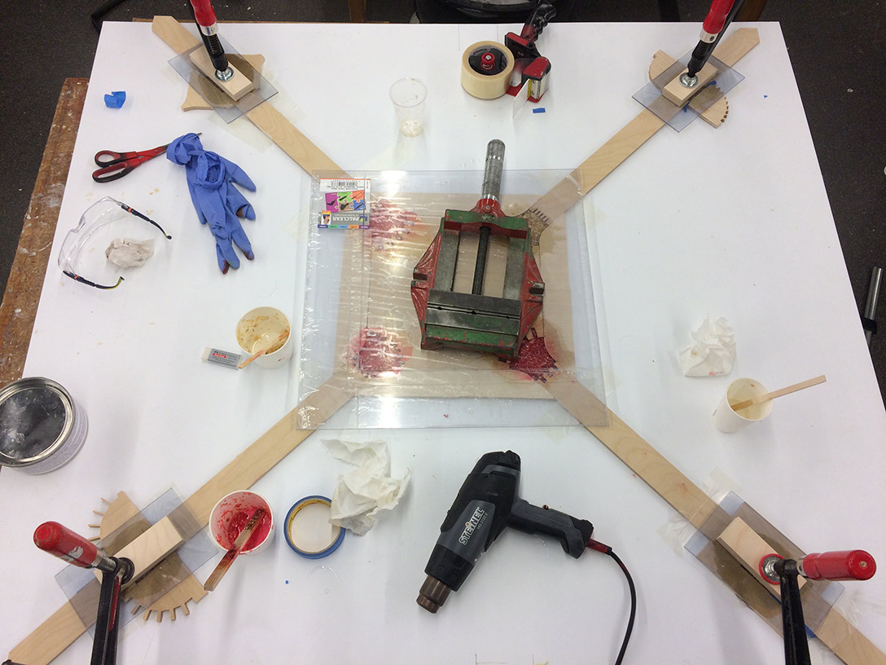
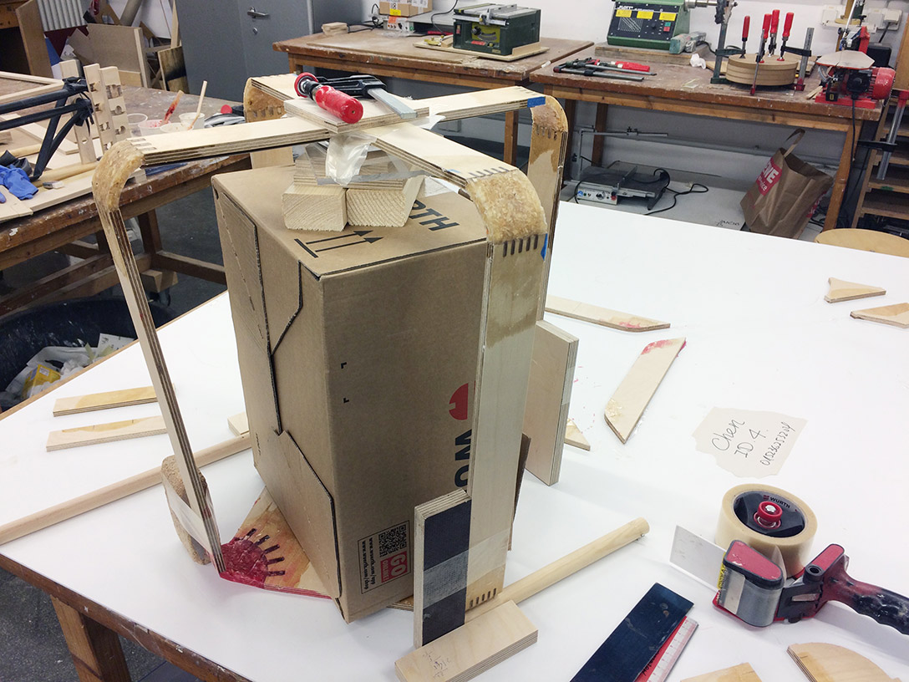
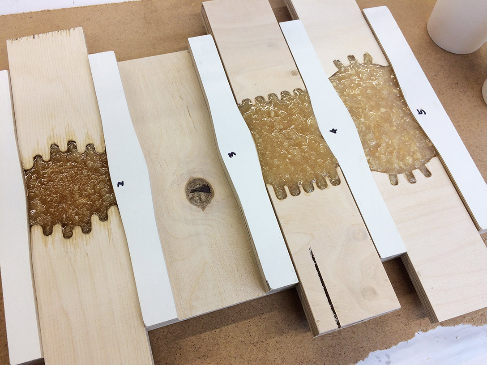
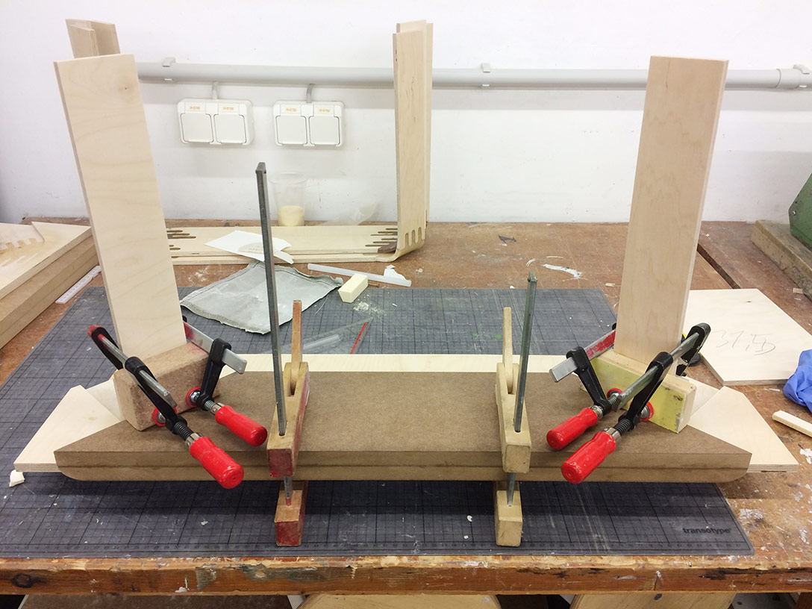
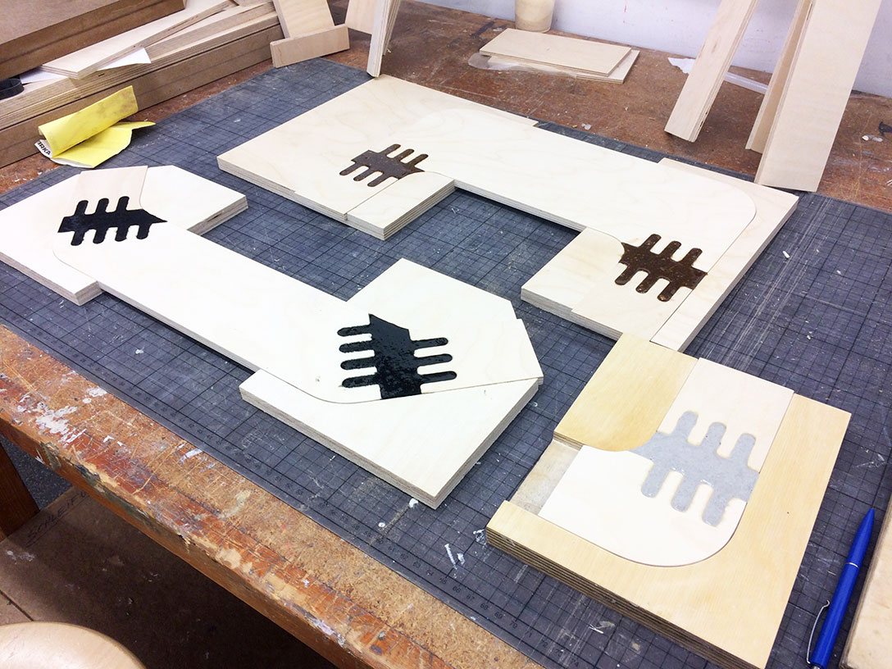
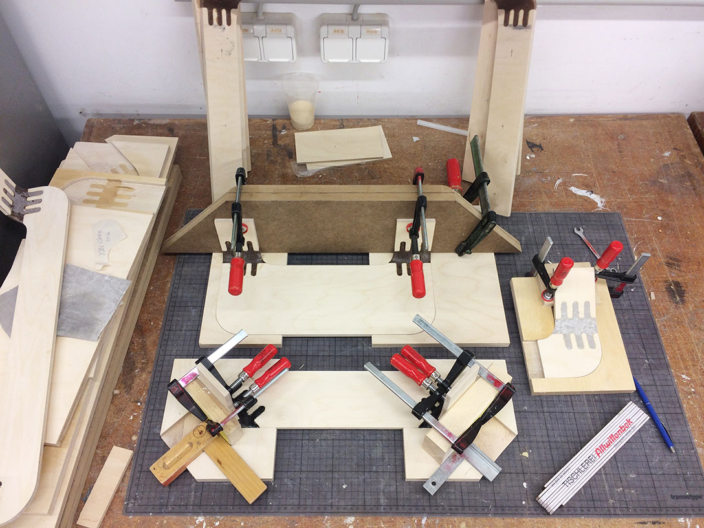
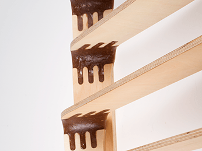
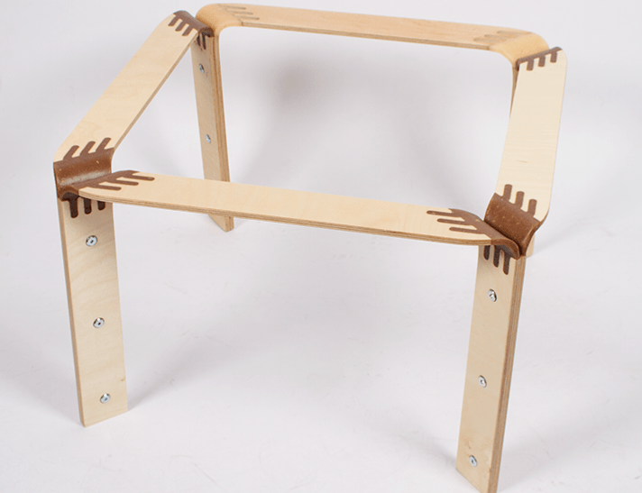
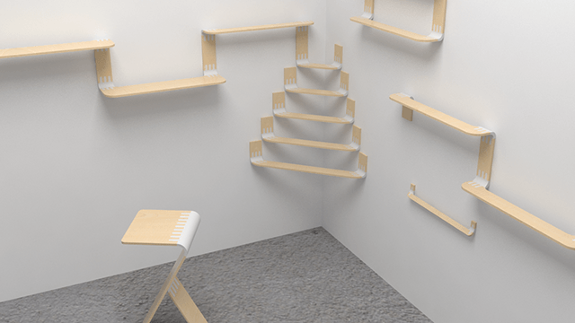
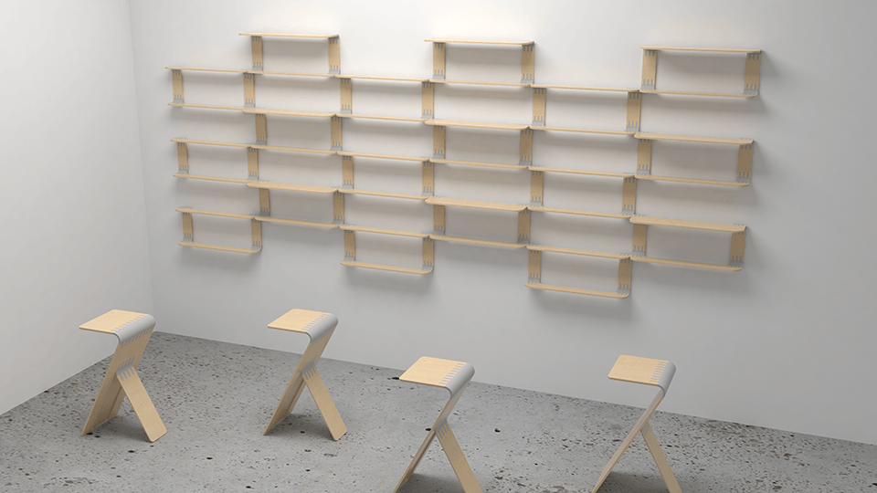

SU is a side table, exploring a new interaction between furniture and human. Its initial form is a plank which is made of two materials, plywood and wood-plastic. The wood-plastic parts can be bent under certain conditions, turning it into a side table. In Asia, Origami is an art, to fold a piece of paper into a 3D craft. Sharing the same story, the process to transform a flat plank of wood into a delicate piece of furniture rises in the persuit of the new aethetics of furniture.
A new method of production was created using the process moulding and bending. I mixed wood chips and epoxy resin to make workable materials, with which different forms of wood could be joined together. That enables new functions and aesthetic of wood.
A small furniture factory:
       Rendering:
 What if wood furniture could be soft and be formed by users? What if the joints were like modelling clay?